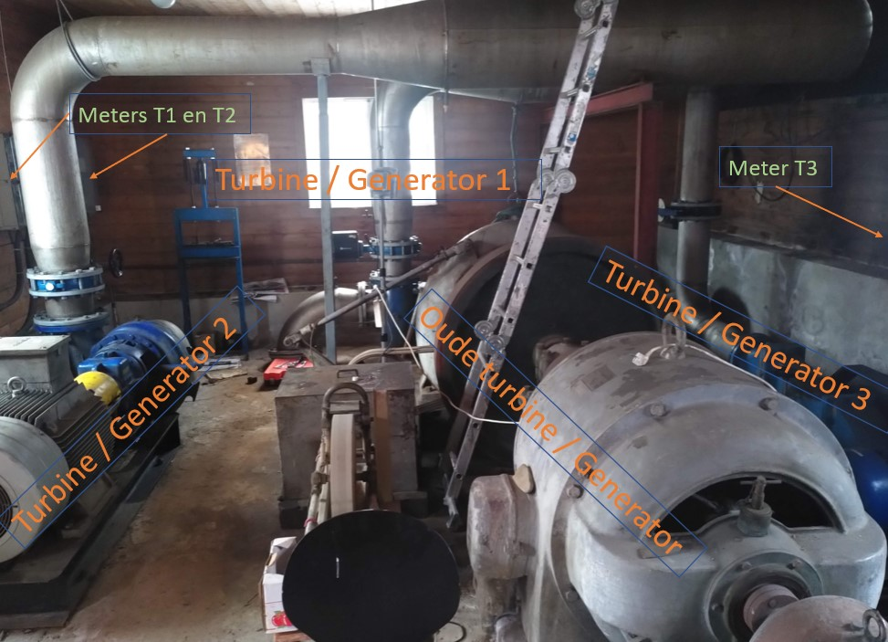
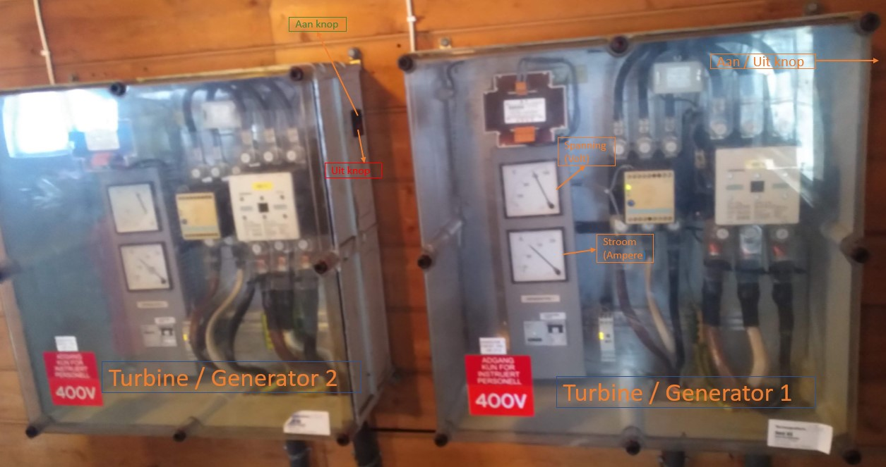
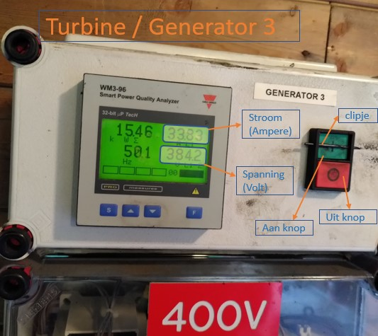

Kraftverk Fossane
Bilde nedenfor gir oversikt over forskjellige turbiner i kraftverket.
Onderstaande foto geeft een overzicht van de verschillende turbines in het kraftverk. De foto is genomen als je binnenkomt en een kwart slag naar links draait,
met je rug tegen de muur met oude meters. Daaronder staan foto's van de meters, behorende bij de verschillende turbines en generatoren.

Meters Turbine / generator 1 en 2:

Meter Turbine 3 / generator:

Når du lurer på noe: ta kontakt med Martijn B. via messenger, eller: +47 980 63 823
tilbake til oversikt webside